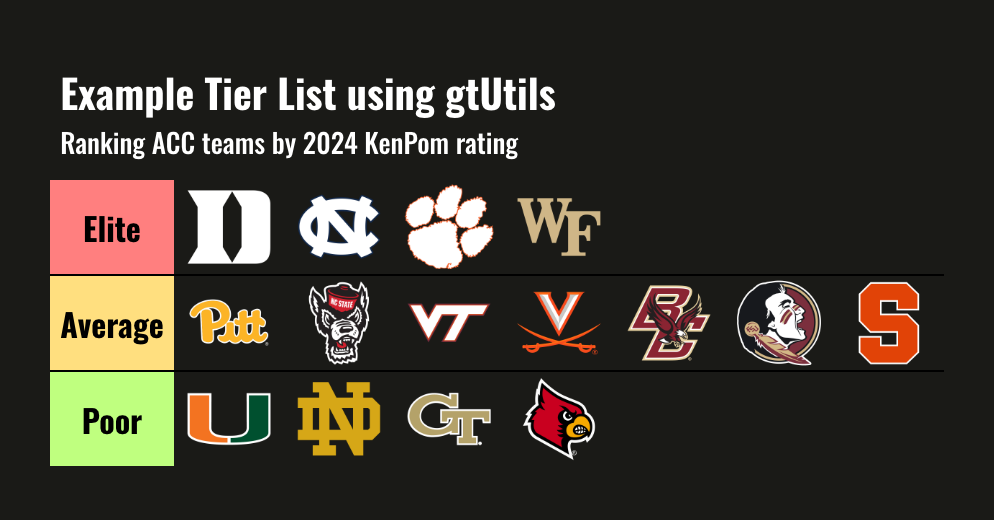

sdvplotR ships with a function that makes creating tier
lists convenient and quick. However, you need to pass your data to
gt in a specific format. This vignette walks through how to
create a simple tier list.

Basic Tier List
For this example, we will be using data that is fetched from the {cbbdata} package. For conveniance, that data will be pushed to a gist for easy extraction.
Processing
If you’re interested in how to pull the data from
cbbdata:
First, let’s fetch the data form GitHub.
data <- read_csv("https://gist.github.com/andreweatherman/a8aaa6057e9858cd11c3327fc32df5bb/raw/3a54e221ae529dc8a2f37077770d7fb1b573b2c9/gtUtils_example_tier_list.csv")We need to establish tiers and colors. For this example, we are going to use three distinct categories and use traditional tier list background colors.
Next, we need to bin our data into these tiers.
subset_rank uses the dense_rank function to
assign ordinal ranks based on our column of interest – adjusted
efficiency margin. Next, we use the cut function to divide these ranks
into distinct tiers based on quantiles, specifying the breaks at the
25th and 75th percentiles. This means the data is split into three
groups, with the lower 25% in one tier, the middle 50% in another, and
the upper 25% in the final tier. The levels argument provides custom
labels for each tier – referencing the levels vector above
– while include.lowest = TRUE ensures the lowest rank is
included in the first tier.
Finally, tier_order is calculated as the rank within each tier using
dense_rank again, but this time grouped by the tier to
ensure the ordering is relative to each group.
data <- data %>%
mutate(
subset_rank = dense_rank(-adj_em),
tier = cut(subset_rank,
breaks = quantile(subset_rank, probs = c(0, 0.25, 0.75, 1)),
labels = levels,
include.lowest = TRUE
)
) %>%
mutate(tier_order = dense_rank(subset_rank), .by = tier)We can use cbbdata to grab team logos and join them onto
our data. Importantly, we are going to use a dark table theme, so we
need to grab the dark mode logos.
Finally, we need to pivot our data to a wide format. This ensures that we will be plotting logos horizontally.
data <- data %>%
pivot_wider(id_cols = tier, names_from = tier_order, values_from = logo) %>%
select(tier, sort(names(.))) %>%
arrange(tier)Great – if your data looks similar to this, you’re ready to make a tier list!
Plotting
gt_tiers does a few things under the hood: - It renders
images from links - It applies the gt_theme_tier function
using “dark” mode as a default - It forces all column labels to be
blank
Let’s apply it!
data %>%
gt() %>%
gt_tiers(levels, colors) %>%
tab_header(
title = "Example Tier List using gtUtils",
subtitle = "Ranking ACC teams by 2024 KenPom rating"
)All done! You’ve created a tier list in gt using
sdvplotR. The tier list function is somewhat limited: a) it
only supports image cells and b) it will not “wrap” your logos to
condense the width (you can play around with image_height to do
this).